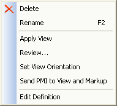
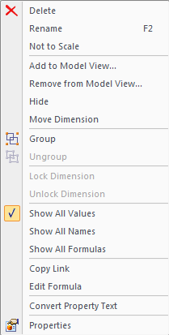

Working with 3D PMI
Model view creation workflow
PMI model view creation is WYSIWYG. The model orientation, render mode, annotations, and dimensions that are visible in the graphics window when you select the Model View command are what you get when the PMI model view is created.
Models in an assembly must be activated before PMI can be added to them.
-
Set a PMI dimension and annotation plane. In the ordered environment, use the Lock Dimension Plane command on the PMI toolbar to set an active 3D dimension and annotation plane. Annotations and dimensions are placed parallel to this plane. You can change this dimension plane at any time while adding annotations and dimensions.
-
Add PMI dimensions and annotations.
In the synchronous environmentSketch dimensions migrate automatically to the 3D model when you extrude a sketch region or use another command that converts the 2D region to a 3D solid. You also can add new PMI annotations and dimensions directly to the model using the commands on the PMI tab.
See these Help topics for more information:
In the ordered environmentYou can use the Copy To PMI command to copy 2D dimensions and annotations from a feature or sketch to the 3D model. You can edit the copied elements using the commands on their shortcut menu. You can add new PMI annotations and dimensions using the commands on the PMI tab.
To learn more about PMI dimensions and annotations, see the Help topic, PMI dimensions and annotations.
-
Choose a view orientation for the model view using standard rotation, view selection, and zoom commands.
-
Create a PMI model view. Use the PMI tab→Model Views group→View command to capture all of this display information, assign a view name and render mode, and save the view. It adds the view name to the “Model Views” collection on PathFinder. All of the dimensions and annotations associated with the model view are listed under the model view name.
To learn more about PMI model views, see the Help topic, Creating 3D model views with PMI.
-
Modify the model view. If necessary, change the model orientation and display settings.
You can hide PMI elements that interfere with the view.
Use the Edit Definition command on the model view shortcut menu to:
-
Change the model view name and definition using the Options button on the Edit Definition command bar.
-
Make changes to the display of parts and subassemblies in the view using the Model View Display group button on command bar.
-
Add and edit dimensions and annotations in the model view using the Model View Display group button on command bar.
To learn how, see the Help topic, Edit a PMI model view definition.
-
-
Create additional model views. Use the Model View command to capture a new orientation and display mode for corresponding PMI. Assign a different name to this view, and choose a render mode as desired. If you change the render mode, use the Apply View command on the PathFinder shortcut menu to apply the view settings to the graphic display.
-
Review. Use the Review command for a graphical tour of all PMI model views.
Adding a 3D section view to a model view
Within the context of the PMI workflow, any 3D sections applied at the time of model view creation are automatically included in the model view, but you can also add or remove sections after the model view is created.
-
Set the section view display properties.
-
Display or hide the cutting plane.
-
Add the section to the model view.
For more information about using section views in PMI model views, see the Help topic, Use a 3D section view in a PMI model view.
Model view editing commands
The commands you use to edit the definition and properties of a 3D model view are located on the shortcut menu of the selected model view on PathFinder. For example, the shortcut menu to manipulate model views contains these commands:

To learn how to use these commands to manipulate PMI model views, see the Help topic, Manipulate a PMI Model View.
PMI element editing commands
The commands you use to add PMI elements to 3D model views, remove PMI elements from 3D model views, and show and hide PMI elements are also located on the shortcut menu of a selected dimension or annotation in PathFinder:

To learn how to use the commands to manipulate PMI elements, see the Help topic, Display and edit PMI elements.
Whether PMI elements are visible or not is controlled by the check box preceding an element or node name, and by the Show and Hide commands on the shortcut menu.
- Showing and hiding nodes and elements
-
When you point to the top level of a Dimensions or Annotations collection, the Show command acts as a gatekeeper for the individual PMI elements in that collection.
-
If you select Hide while pointing to the Dimensions or Annotations node, then all the dimensions and annotations in the collection are immediately turned off in the display.
Note:Individual elements can only be made visible if the node is also set to be shown.
-
If you select Show while pointing to the Dimensions or Annotations node, then the dimensions and annotations in the collection can be shown, depending upon their individual show/hide settings.
Tip:You can edit a model part or feature without the clutter of PMI annotations and dimensions. Use the Hide command to temporarily remove the annotations and dimensions; use the Show command to restore them.
If you set or clear the check box in front of an individual PMI element in any collection, then all instances of this PMI element are shown or hidden in the document.
See the Display and edit PMI elements section in the Product Manufacturing Information (PMI) overview Help topic for a table that illustrates the show and hide states of PMI-related icons.
-
- Show or hide in a model view
-
If you select Hide while editing a model view, then elements that are hidden when you exit edit mode are removed from that model view's list of collected elements.
- Show All and Hide All
-
The Show All and Hide All commands for a node are a fast way to turn on or off all of the individual dimensions or annotations in the document.